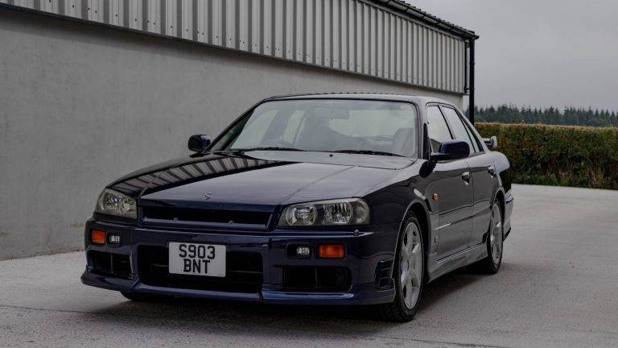

La Nissan Skyline R34 est une automobile berline (ou sedan) 4 portes, souvent retenue pour la déclinaison GT-R (BNR34) coupé 2 portes sportif haut de gamme.
Cette génération de Skyline sortie en 1998 fut commercialisée au Japon uniquement (hormis quelques rares exceptions).
Le modèle sedan le plus performant est la Nissan Skyline 25 GT-X Turbo (châssis ER34), sortie en 1998, elle est dotée du moteur RB25DET Neo, un six cylindres en ligne de 280 ch, équipé d'un turbo. Elle fut disponible en boite mécanique 5 rapports ou semi-automatique 4 rapports.
Plus d'informations :
Lien Wiki